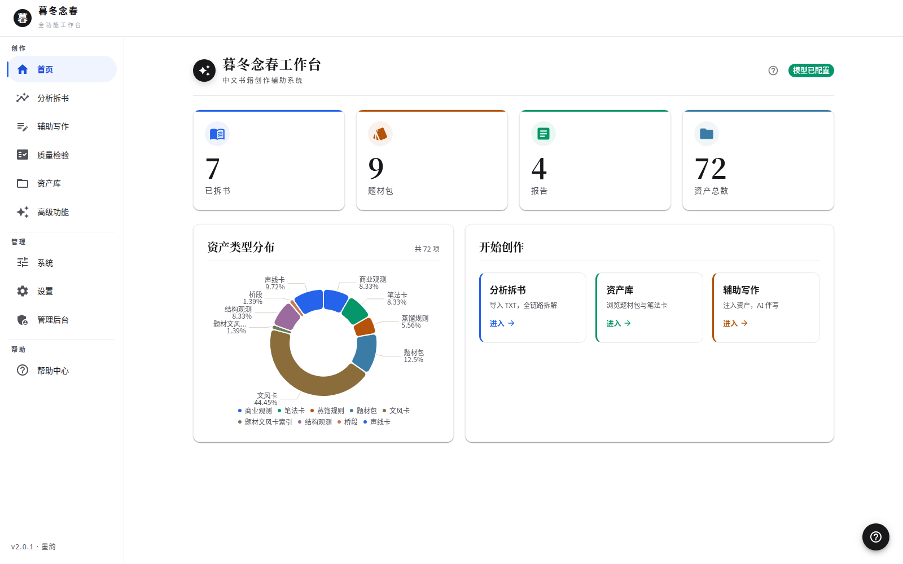
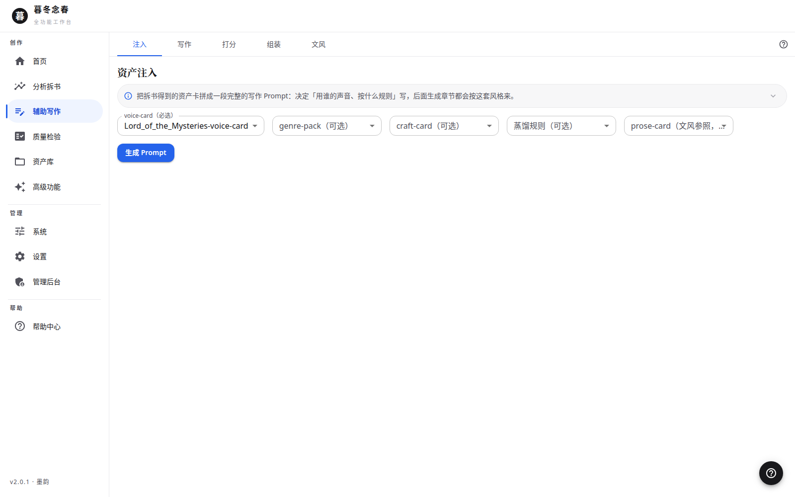

把优秀小说拆成可复用的结构化资产，再用这些资产驱动 AI 辅助创作。
本地优先 · 完全离线可用 · 你的数据只属于你自己
从拆书、资产沉淀到辅助写作与质检，一条完整创作链路，一个软件全部搞定。
TXT 全本导入，分层采样、五遍扫描，把一本优秀小说拆解为可量化、可复用的结构化资产。
文风卡、笔法卡、结构观测、商业观测、题材包、桥段库……内置 72 个资产（含 9 个题材包、32 个桥段），开箱即用。
把资产注入生成流程：资产注入 → AI 生成 → 一致性与质量双维度改写循环，越写越像你想要的样子。
单章 12 个维度 100 分制检查，外加全书级质检，问题定位到具体章节，改得有依据。
不同题材的资产与配置严格隔离，全链路校验，杜绝跨题材污染——这是刻进产品的铁律。
完全本地运行，服务只绑定本机（127.0.0.1）。你的书稿、资产与配置，不会上传到任何地方。
六步，把一本好书变成你的创作弹药库。
把 TXT 全本小说导入本地书库
分层采样，五遍扫描，量化拆解
多维度蒸馏为文风卡、桥段等资产
生成万字级分析报告，硬校验把关
单章 12 维打分，全书质检
资产注入，AI 辅助生成与改写
简约高级白，桌面端原生窗口，打开即用。


免费，开源，一分钟装好。
安装包未做数字签名，首次运行时 Windows SmartScreen 可能会提示"未知发布者"，属正常现象（个人分发无证书），选择"仍要运行"即可。
源码与更新日志见 GitHub 仓库。